Esta no es la lista de lo que el sistema puede hacer, sino de
lo que dejó de hacerse a mano. Cada punto compara cómo se trabajaba
antes —libreta, pizarrón, llamada telefónica, memoria del encargado—
contra cómo se resuelve hoy, con la pantalla real que lo resuelve.
La segunda mitad está dedicada por completo a lo que el sistema hace
con los datos una vez capturados: inteligencia artificial y
análisis. Es la parte que no existía de ninguna forma antes, ni
en papel ni en hojas de cálculo.
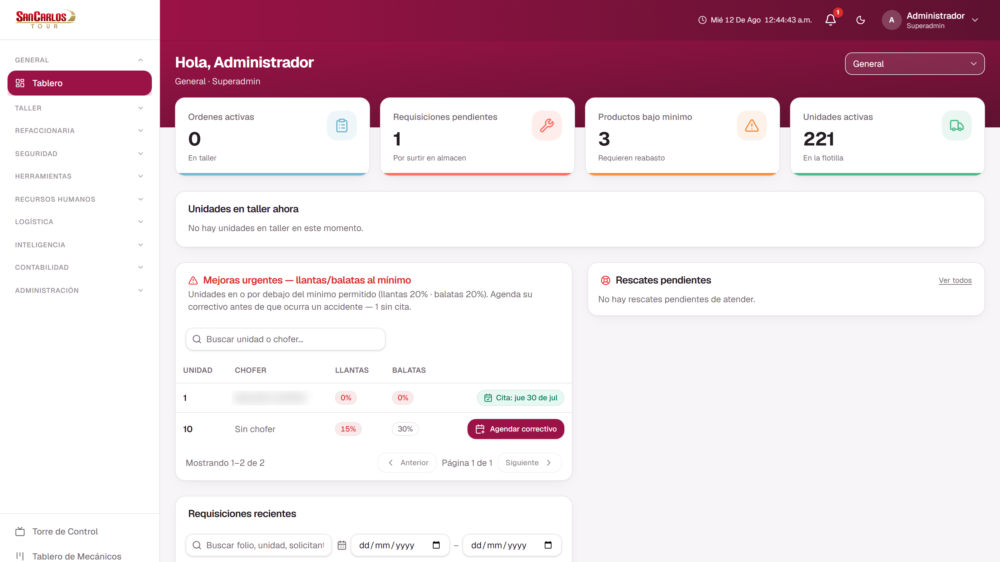
El tablero que ve cualquiera al entrar.
Nombre de chofer difuminado. Lo que antes había que ir a
preguntar a cuatro personas distintas —cuántas unidades hay en
taller, qué falta surtir, qué se está agotando— está resuelto antes
de dar el primer clic.
12agentes de IA atendiendo por WhatsApp
6tableros de inteligencia y análisis
1expediente por unidad y por persona
0libretas de papel en el flujo diario
Parte uno
De la libreta al sistema
Lo que antes dependía de que alguien se acordara, lo escribiera o
contestara el teléfono. Siete puntos de la operación diaria que
cambiaron de soporte.
01
La orden de servicio
El documento central del taller: qué unidad entró, a qué, quién
la está atendiendo y qué se le hizo.
Antes
La orden vivía en una libreta o en un pizarrón, y solo la
entendía quien la escribió.
Nadie podía decir con certeza
cuántas unidades estaban adentro ni desde cuándo.
Si el mecánico terminaba su turno sin acabar, el siguiente
empezaba preguntando.
El historial de una unidad era la memoria del jefe de taller.
Con el sistema
Orden digital con unidad, mecánico asignado, motivo, prioridad
y kilometraje.
Registra vida de llantas y balatas, que después alimenta
las alertas de correctivo.
Transferencia entre mecánicos: el turno que entra recibe
la orden con lo que ya se hizo.
Reparaciones de contingencia con evidencia fotográfica y
requisiciones ligadas a la misma orden.
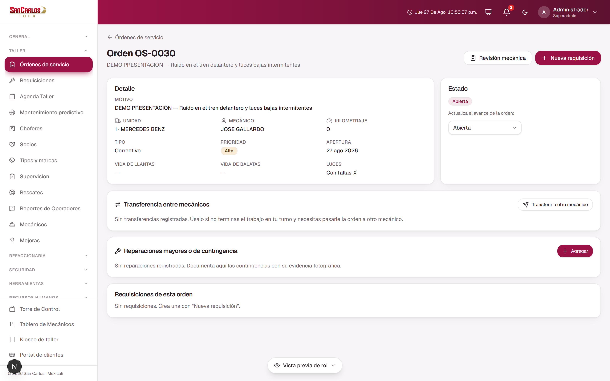
Una orden abierta.
Todo lo que antes se preguntaba de viva voz —quién la trae,
a qué, en qué va— está en la misma pantalla, y el historial queda
ligado a la unidad de forma permanente.
02
Recepción de la unidad
El momento en que el chofer deja la unidad, que es donde más
información se perdía.
Antes
El chofer dejaba la unidad y
le contaba la falla a quien estuviera.
Si el mecánico estaba ocupado, el recado se perdía en el
camino.
La descripción original de la falla casi nunca llegaba completa
a quien iba a repararla.
Con el sistema
El chofer registra su unidad él mismo en la tablet del
taller, en menos de un minuto.
Deja escrito con sus palabras a qué viene; el mecánico completa
el resto de la orden cuando se desocupa.
Solo aparecen las unidades que ya pasaron por la caseta y no
traen otra orden abierta: no se duplican.
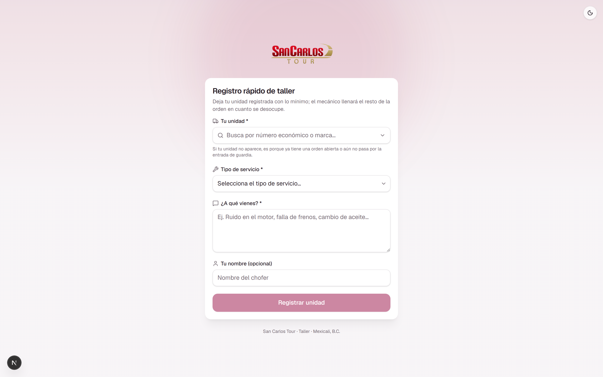
El kiosco de taller.
La falla la describe quien la sintió manejando, no quien la
escuchó de segunda mano.
03
Refacciones y almacén
De la pieza que sale del almacén a lo que realmente costó
reparar cada unidad.
Antes
Vale de papel, o de plano nada: la pieza salía y se anotaba
después —si se anotaba—.
El inventario real solo lo sabía el almacenista,
y de memoria.
Nadie podía responder cuánto costó reparar una unidad en el
año.
Las refacciones agotadas se descubrían cuando el taller ya
estaba detenido.
Con el sistema
La requisición nace desde la orden de servicio: siempre
se sabe para qué unidad es la pieza.
Despacho con folio y estado: pendiente, lista para entregar,
surtida.
El inventario se descuenta solo al surtir, y el costo se
acumula en la unidad.
Los productos bajo mínimo saltan como alerta antes de
agotarse.
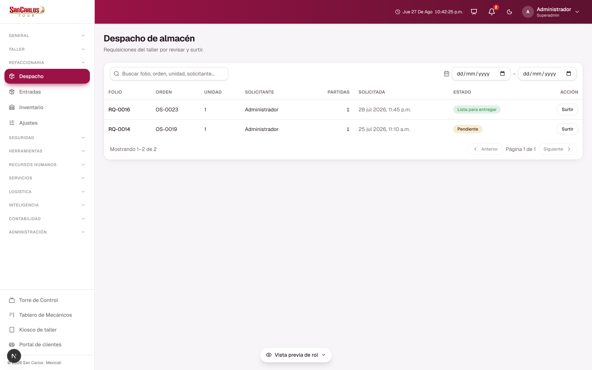
Despacho de almacén. Cada renglón amarra
folio, orden y unidad: el costo de una reparación deja de
ser una estimación.
04
Control de acceso
Quién entra, quién sale, a qué hora y con qué unidad.
Antes
Libreta en la puerta, con la letra del guardia en turno.
Entradas sin salida y salidas sin entrada: la libreta no
cuadraba.
Para saber si una unidad estaba adentro había que
ir a verla.
Las discusiones sobre a qué hora salió alguien no tenían cómo
resolverse.
Con el sistema
Bitácora electrónica con guardia, motivo y hora exacta de cada
movimiento.
QR de unidad y QR de persona: el guardia escanea en
lugar de escribir.
La entrada marca la unidad “en taller” sola, sin que nadie más
lo capture.
Salidas a prueba: el mecánico saca la unidad a probarla
sin que deje de contar como en taller.
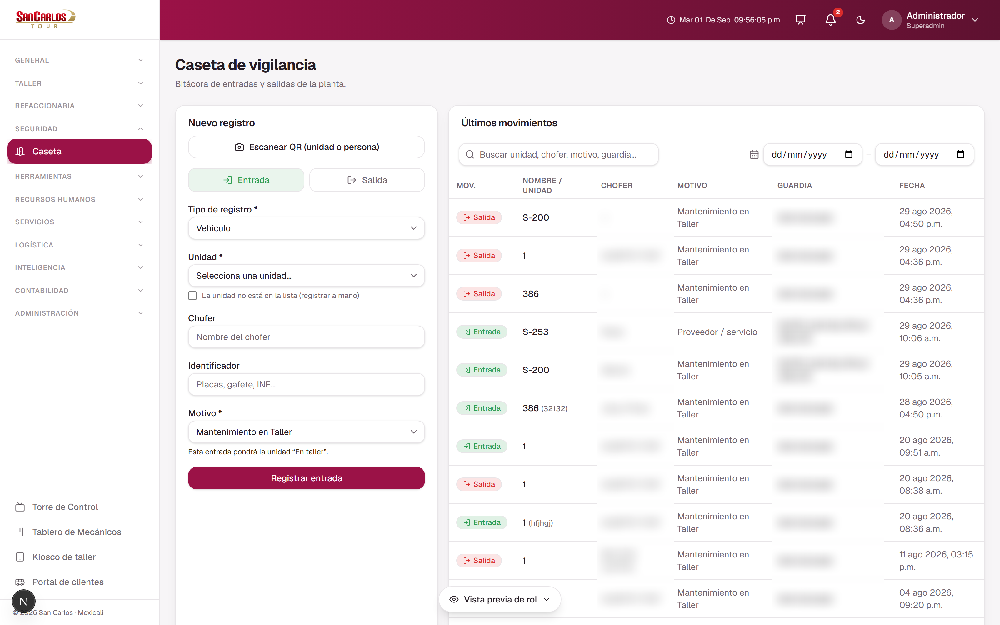
Caseta de vigilancia.
Nombres de choferes y guardias difuminados. La bitácora es
una sola para toda la planta, y es la misma que el taller consulta
para saber qué tiene adentro.
05
Mantenimiento preventivo
El programa que evita que la unidad se rompa en ruta —si alguien
lo persigue—.
Antes
Calendario pegado en la pared y buena voluntad.
El aviso al chofer era una llamada, unidad por unidad.
Si el chofer no llegaba,
nadie registraba que no llegó: la falta se perdía.
Reagendar significaba tachar y volver a escribir.
Con el sistema
Cada unidad tiene su fecha y su ciclo; el calendario se
proyecta solo hacia adelante.
El aviso lo manda un agente de IA por WhatsApp, no una
persona marcando teléfonos.
La asistencia se marca —asistió o no asistió— y
cuenta para el ranking del chofer.
Reagenda con arrastre de fecha, y Servicio Motor o A/C
programados por kilometraje.
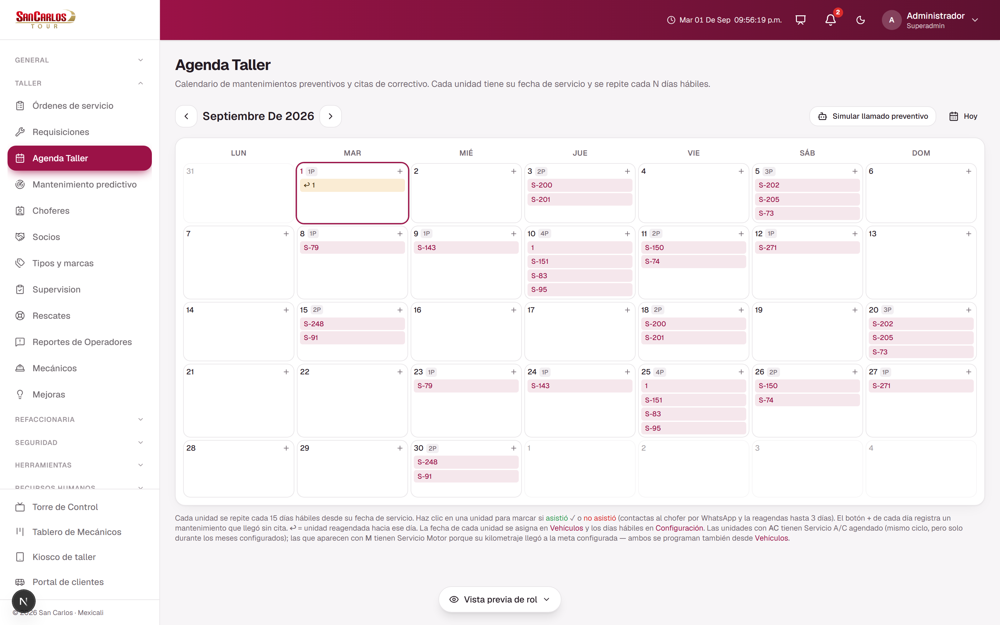
La agenda del taller. Lo importante no es el calendario, sino que
la falta a una cita quede registrada y tenga consecuencia.
06
Permisos y responsabilidad
Quién puede ver qué, quién puede modificar qué, y quién hizo cada
cosa.
Antes
O todos veían todo, o había que pedir permiso por teléfono.
Al dar de baja a alguien,
nadie se acordaba de cerrarle los accesos.
Un dato mal capturado no tenía autor: se corregía y ya.
Con el sistema
El Perfil y el Puesto de Recursos Humanos definen el
acceso: no hay una lista aparte que mantener.
Módulo por módulo se decide: sin acceso, lectura o escritura.
Baja en RRHH significa acceso cerrado el mismo día, sin
intervención de nadie.
Cada movimiento queda con nombre y hora. El “yo creía”
dejó de ser un argumento.
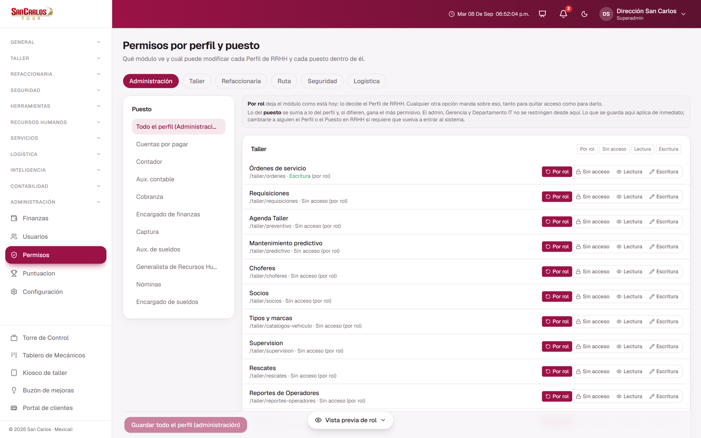
Permisos por perfil y puesto.
El organigrama de Recursos Humanos es el que manda; el
sistema solo lo obedece.
07
Viajes y clientes
La solicitud del cliente, desde que la pide hasta que se cobra.
Antes
El viaje se pedía por teléfono o por un mensaje suelto, y se
apuntaba donde se pudiera.
Si quien lo tomó no llegaba al día siguiente,
el viaje se perdía.
Lo que quedó por cobrar solo se sabía al cierre de mes.
El cliente llamaba para preguntar si su unidad ya iba en
camino.
Con el sistema
El cliente lo pide desde su propio portal, o se captura
internamente; en ambos casos nace con folio.
Estados claros: generado, aceptado, cotizado, chofer asignado,
en proceso, por cobrar, cerrado.
Cada viaje tiene un responsable con nombre, y lo pendiente de
cobro está siempre a la vista.
Mapa en vivo de los servicios en curso, con la unidad
asignada.
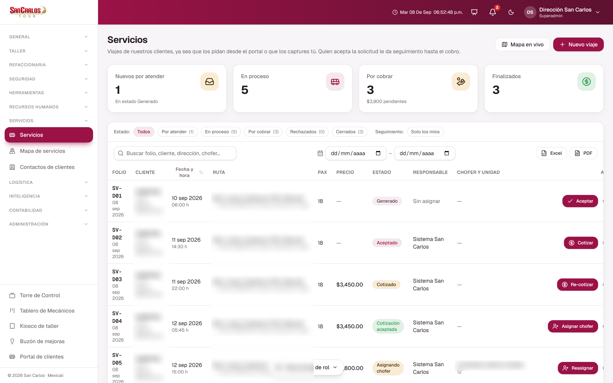
Servicios de punta a punta.
Razón social del cliente, contacto, teléfono, direcciones y
nombre del chofer difuminados
en esta captura.
Parte dos · Inteligencia artificial y análisis de datos
El sistema no solo guarda los datos: los lee y regresa conclusiones
Capturar es la mitad. La otra mitad es que alguien cruce esa
información y diga qué hacer con ella — y eso antes no existía en
ninguna forma: ni en papel, ni en hojas de cálculo, ni en la cabeza
de nadie, porque son cruces que una persona no alcanza a hacer todos
los días sobre una flotilla completa.
Los agentes y los reportes corren sobre
Claude, de Anthropic, conectado a la base de datos real de la
operación. Y algo importante: la IA no inventa números. En los
reportes únicamente elige qué consultar dentro de un catálogo cerrado
de fuentes y campos; la consulta la ejecuta el sistema y se valida
antes de correr. Si el modelo pide algo que no existe, la petición
falla, en vez de convertirse en un dato falso.
08
Mantenimiento predictivo
Cuándo le toca servicio a cada unidad según el ritmo real al que
se usa, no según el calendario.
Antes
Servicio por calendario: todas las unidades igual.
Una unidad que hace 300 km al día y otra que hace 40 recibían
el mismo trato.
Resultado: a unas se les gastaba de más en mantenimiento, y
otras se rompían en carretera antes de su fecha.
Anticipar un servicio dependía del ojo del jefe de taller.
Con el sistema
Calcula el ritmo real de uso —kilómetros por día— de
cada unidad, tomando la mejor fuente disponible: el histórico
de odómetro del GPS y, si no lo hay, los kilometrajes
capturados en las órdenes de servicio.
Proyecta la fecha en que esa unidad va a cruzar su
umbral de servicio.
Clasifica la flotilla: ya pasó el umbral, le toca esta semana,
le toca este mes, al corriente, sin programa.
Se recalcula solo y se exporta para repartir el trabajo del
taller.
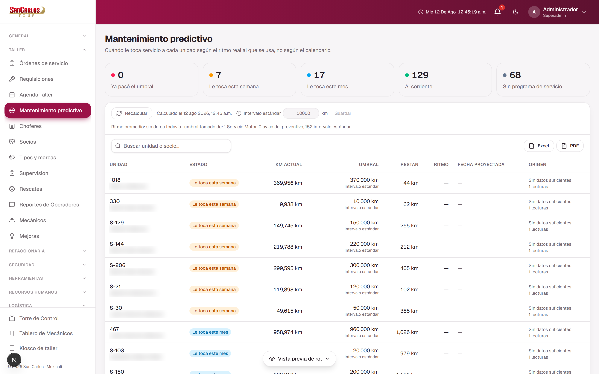
Mantenimiento predictivo.
Nombres de socios difuminados. La columna “Origen” dice de
dónde salió cada proyección: el sistema es explícito cuando
todavía no tiene lecturas suficientes, en lugar de inventar una
fecha.
09
Detección de anomalías en combustible
Cada carga, contra los kilómetros que debería haber justificado.
Antes
Se pagaban los tickets y se confiaba.
Una fuga, un odómetro descompuesto o una carga que no cuadraba
se descubría meses después, o nunca.
El rendimiento de la flotilla era una cifra global de fin de
mes, sin causa ni renglón que revisar.
Con el sistema
Rendimiento tanque a tanque: los kilómetros recorridos
entre dos cargas, divididos entre los litros de la segunda.
Cada carga se marca coherente o incoherente, y dice por
qué. Cuando la unidad trae GPS, el contraste es contra los
kilómetros que reportó el rastreador.
El sensor de nivel del tanque
detecta cargas que nunca se capturaron: litros que
entraron sin ticket.
No acusa a nadie: señala el renglón que hay que ir a revisar
—fuga, robo, captura mal hecha u odómetro roto—.
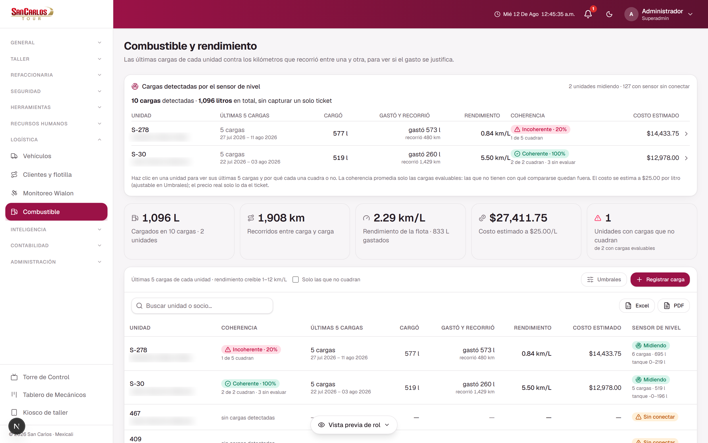
Combustible y rendimiento.
Nombres de socios difuminados. Las “cargas detectadas por el
sensor” son litros que el sistema vio entrar al tanque sin que
existiera un ticket capturado.
10
El GPS, dentro del sistema
La flota completa sin tener que abrir otra plataforma.
Antes
El GPS vivía aparte: había que entrar a otra plataforma y
cruzar a mano contra la lista de unidades.
Una unidad que dejó de reportar podía pasar semanas sin que
nadie lo notara.
El kilometraje del rastreador no servía para nada más.
Con el sistema
Ubicación, odómetro, horas de motor, voltaje de batería, señal
y sensores en la misma pantalla que el resto del
expediente de la unidad.
Emparejamiento automático por VIN entre el rastreador y la
unidad del sistema; las que no empatan quedan señaladas.
El odómetro del GPS
alimenta al mantenimiento predictivo y al cálculo de
rendimiento de combustible.
Las unidades que dejan de reportar saltan como alerta crítica.
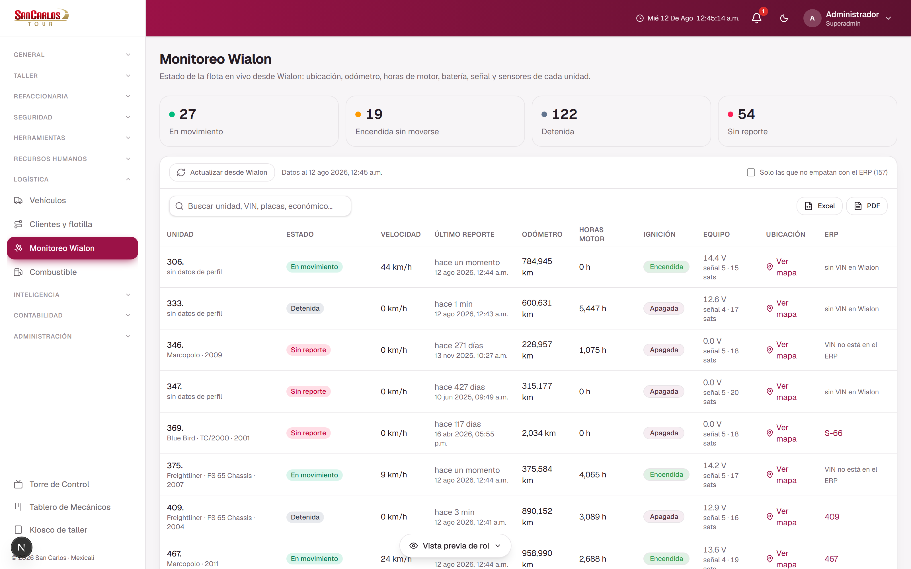
Monitoreo de flota. El valor no es ver el mapa: es que
ese kilometraje se convierta en una fecha de servicio sin
que nadie lo transcriba.
11
Centro de alertas
Todo lo que necesita atención hoy, en un solo lugar y ordenado
por gravedad.
Antes
Las pólizas y las licencias vencidas se descubrían
cuando ya habían vencido, a veces en una revisión de
carretera.
Los huecos de captura —un VIN faltante, una vigencia vacía— no
los veía nadie.
Cada área vigilaba lo suyo y nadie veía el conjunto.
Con el sistema
Un solo tablero con severidad
crítica, alta, media e informativa.
Junta tres cosas que se descubrían tarde:
operación (unidades sin reportar, batería baja del
rastreador, llantas o balatas al límite, refacciones agotadas),
vencimientos (pólizas y licencias) y
calidad de datos.
Cada alerta trae la lista concreta de a quién le falta qué,
para poder repartir el trabajo de captura.
Explica el porqué en una línea, no solo el número.
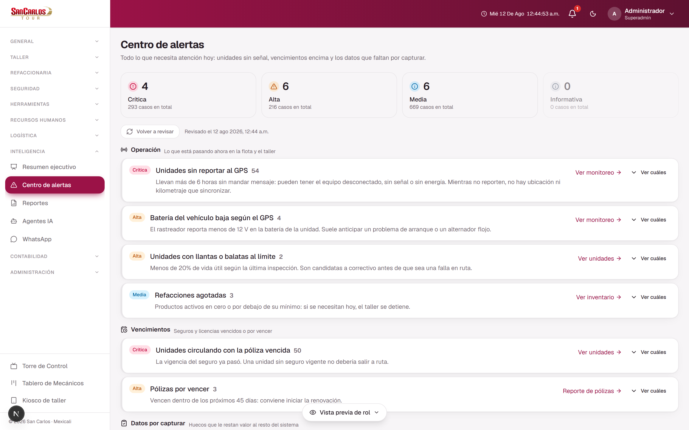
Centro de alertas. La sección de
calidad de datos es poco común y muy útil: vigila los huecos
de captura que le restan valor al resto del sistema.
12
Reportes en lenguaje natural
Preguntarle al sistema con las propias palabras, sin depender de
quien sabe hacer tablas dinámicas.
Antes
Pedirle a alguien que exportara a una hoja de cálculo y lo
cruzara a mano.
Días de espera por una pregunta que se contesta en una línea.
En la práctica,
muchas preguntas simplemente no se hacían porque
costaban demasiado trabajo.
Con el sistema
Se escribe la pregunta tal cual: “cuántas órdenes correctivas se abrieron por mecánico este
trimestre, de mayor a menor”.
La IA traduce la pregunta a una especificación de reporte;
el sistema es quien consulta la base, sobre un catálogo
cerrado de fuentes y campos.
Esa especificación se valida antes de ejecutarse: una respuesta
inventada falla, no se convierte en un dato falso.
Además hay reportes prediseñados de un clic, y todo sale en
PDF, Excel o XML.
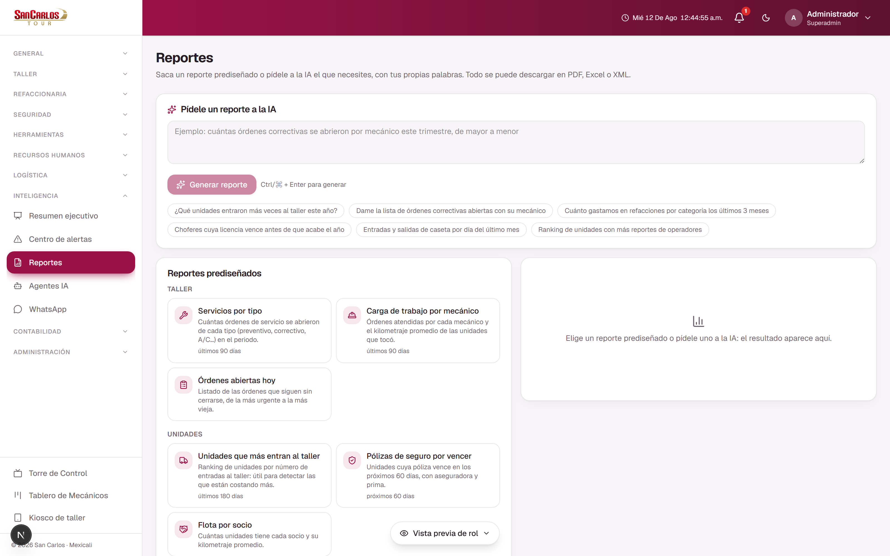
Reportes. Los ejemplos que aparecen como sugerencias son
preguntas reales de operación: pólizas por vencer, carga de
trabajo por mecánico, unidades que más entran al taller.
13
Doce agentes de IA atendiendo por WhatsApp
La conversación con el chofer deja de ser una llamada que alguien
tiene que contestar, y se vuelve un registro.
Antes
El chofer llamaba a la oficina. Si no contestaban,
el reporte se perdía.
El seguimiento dependía de quién tomó la llamada y de lo que
alcanzó a apuntar.
Fuera del horario de oficina, no había a quién reportarle.
Confirmar las citas de preventivo era el trabajo de una persona
marcando teléfonos.
Con el sistema
Doce agentes conversan por WhatsApp,
cada uno con su palabra clave configurable, las 24
horas.
El agente hace las preguntas que faltan y
lo que se habla queda capturado en el sistema, no en un
cuaderno.
Unos los inicia el chofer (rescate, correctivo, reportar);
otros salen solos del sistema (confirmación de preventivo, de
Servicio A/C, de Servicio Motor).
Si la IA no está disponible, los avisos automáticos se mandan
igual con el texto de siempre: el proceso no se detiene.
rescate · Rescates en carreteracorrectivo · Citas de correctivoinfo · Información de unidadreportar · Reportes de operadorescodigo · Mi gafete QRGuía de uso del sistemaConfirmación de preventivoConfirmación de Servicio A/CCita de Servicio MotorConfirmación de citaTomar unidad por QRCierre de servicio
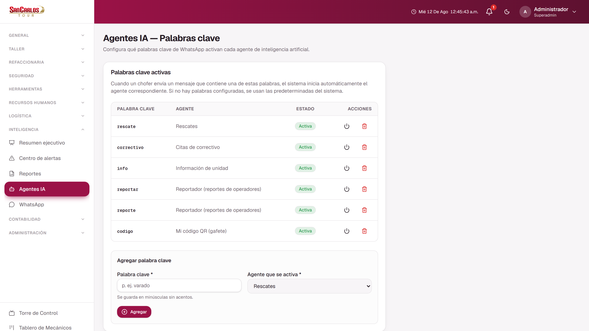
Las palabras clave son configurables desde el propio sistema:
la empresa decide con qué palabra se activa cada agente, sin
tocar código ni pedir un desarrollo.
14
Resumen ejecutivo semanal
La semana en una hoja, para quien no entra al sistema todos los
días.
Antes
La dirección se enteraba en la junta,
con lo que cada área quería contar.
No había forma de comparar contra la semana pasada.
Lo que requería una decisión se mezclaba con lo que solo era
información.
Con el sistema
Una hoja con taller, operación, refaccionaria y mantenimiento
predictivo, comparada contra la semana anterior.
Un bloque aparte, arriba de todo:
“Requiere atención” — solo lo que necesita una decisión.
Se descarga en PDF o
llega solo por WhatsApp cada lunes, sin que nadie lo
prepare.
Es el mismo dato que ve el taller: no hay dos versiones de la
verdad.
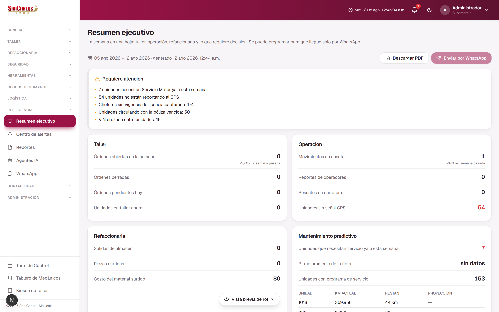
Resumen ejecutivo. Las cifras de esta captura corresponden a un
ambiente de pruebas y no representan la operación real.
15
Desempeño medido, no opinado
Choferes y mecánicos, con criterios escritos y visibles para
todos.
Antes
“El que se porta bien” era una opinión, y cambiaba según
quién opinara.
El esfuerzo del que sí cumplía no se notaba en ningún lado.
Un reconocimiento —o una llamada de atención— no tenía con qué
sustentarse.
Con el sistema
Puntuación mensual con criterios configurables:
asistencia a preventivo, exámenes de salud, revisiones
mecánicas registradas desde una orden.
El chofer puede consultar su propio puntaje y el detalle de
cómo se armó.
Rangos visibles —Élite, Premier, Guía— que dan algo que
perseguir.
Se calcula del mismo dato operativo que ya se captura:
nadie tiene que llenar una evaluación aparte.
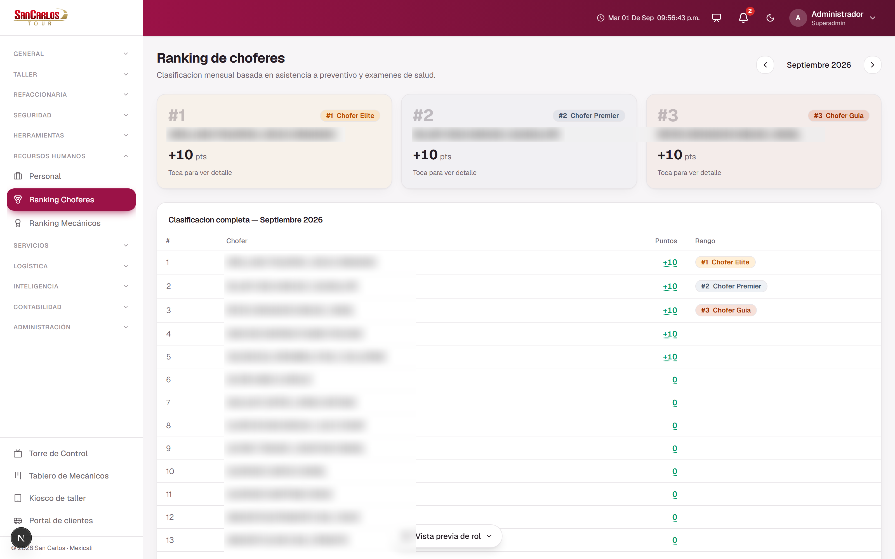
Ranking de choferes — nombres difuminados.
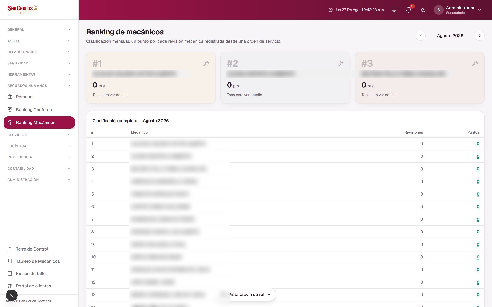
Ranking de mecánicos — nombres difuminados.
En resumen
Qué significa todo esto en la operación diaria
Se acabó el “yo creía”
Cada dato tiene autor y hora. Las discusiones sobre qué pasó se
resuelven abriendo la pantalla, no levantando la voz.
Los problemas se ven antes de costar
Una póliza por vencer, una unidad que dejó de reportar o una carga
de combustible que no cuadra aparecen el mismo día, no en la
auditoría.
La información dejó de vivir en las cabezas
El historial de una unidad ya no se va con el encargado que
renuncia. Está en el expediente, completo y consultable.
La dirección no depende de que le reporten
El resumen ejecutivo llega solo cada lunes, y cualquier pregunta
fuera de ese resumen se responde escribiéndola en el módulo de
reportes.
Y sigue afinándose
Los módulos de inteligencia mejoran conforme se captura: el
mantenimiento predictivo necesita lecturas de kilometraje para afinar
su proyección, y la coherencia de combustible mejora con cada carga
registrada. El sistema ya mide; entre más se alimenta, más fino
responde.
Nota sobre los datos de estas capturas
Las capturas de esta presentación se tomaron de un
ambiente de demostración y pruebas. Los nombres de personas
—choferes, mecánicos, guardias y socios—, así como las razones
sociales de clientes, sus contactos, teléfonos y direcciones,
fueron difuminados a propósito antes de publicar esta página.
Las cifras, importes, folios y kilometrajes que sí quedan visibles
corresponden a momentos sueltos de ese ambiente de pruebas:
no son datos reales de operación y no deben leerse como
indicadores
del desempeño de San Carlos Tour Plus ni de sus clientes.
Lo único que esta presentación afirma como real es
el funcionamiento del sistema que se muestra en pantalla.
Cualquier parecido de un nombre o de una cifra con una persona o una
operación real es casual.